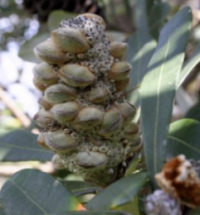

Page contents:
Exploring patterns in biodiversity data
Author: Dr Ben Raymond, Australian Antarctic Division, Hobart

Dr Ben Raymond,
Australian Antarctic Division
About the Author
The Atlas of Living Australia provides access to a wealth of biodiversity data, as well as a suite of analysis tools that allow users to explore patterns in species occurrences and their relationships to environmental conditions.
These analyses can range from simple maps to sophisticated modelling (see, for example, Dr Jane Elith’s case study on species distribution modelling). For all such analyses, it is important to gain an understanding of the limitations of the data, including any errors and outliers that might be present.
While some data errors can be picked up automatically by the verification tools used by the Atlas (for example, swapped latitude and longitude values in a record’s location field), many types of outliers are not amenable to automated detection.
Example: Banksia integrifolia
Banksia integrifolia occurrence locations

Banksia integrifolia (Coastal Banksia)
In April 2011, a search for Banksia integrifolia in the Atlas returned 1744 occurrence records. These occurrences were largely coastal, ranging from south-eastern Victoria to central Queensland (see image above and follow link to the Spatial Portal interactive map). Occurrences extended further inland in the central NSW and southern Queensland regions.
The Atlas’ scatterplot tool graphs environmental variables at occurrence locations. Choosing ‘Distance - to coast’ and ‘Temperature - annual max mean’ shows two distinct clusters on the scatterplot: one relatively close to the coast, spanning temperatures from about 16°C to 27°C (see image below). The second cluster lies further from the coast and generally at the cooler end of that temperature range.
Selecting the occurrences in the main part of the second cluster reveals that this subset lies inland of the central-northern NSW coast (yellow points in image below). Examining other environmental variables, such as Elevation, reveals that the inland cluster is also generally associated with higher altitudes, up to about 1500m (see image below).
The selected points in the scatter plot correspond to the subspecies Banksia integrifolia subsp. monticola
(yellow points). (Click to see full-sized image).
Scatter plot of distance to coast vs. elevation. The selected points are the same as those in the adjacent image.
According to the taxonomy, the species Banksia integrifolia consists of three subspecies and seven varieties. Searching the Atlas for Banksia integrifolia will return all subspecies of that species, together with all records identified to species level only.
The inland, higher elevation observations (yellow points in above image) correspond to the subspecies Banksia integrifolia subsp. monticola. The subspecies compar is to be found along the central Queensland coast, and the subspecies integrifolia inhabits near-coastal regions from southern Queensland to Victoria.

Records of Banksia integrifolia subsp. monticola (green points). The selected observations of Banksia integrifolia (yellow points) are the same as those in image above.
Occurrence record for a specimen of Banksia integrifolia subsp. compar, but which is not returned when searching for that subspecies. (Click to see full-sized image).
With the exception of monticola, there were very few records identified to subspecies in the Atlas database at the time of writing. There were 180 records of monticola, and their distribution coincides with the inland cluster (see image above). Searching for the subspecies compar, found along the central Queensland coast, returned only 2 records. However, examining individual records from this region shows that many are in fact identified as compar (see image above with green points), but are not returned when searching for that species.
Finding Errors and Outliers
Left: Banksia integrifolia observations with missing environmental data.
Right: Errors in NDVI values, likely due to location imprecision. (Click to see full-sized image).
Errors and outliers in the data would need to be addressed before proceeding with more formal analyses such as habitat modelling. For example, a few occurrences are from the Bass Strait islands south of the Australian mainland. While there is some historical evidence that this species was observed there in the late 1800s (indeed, the two King Island data points with dates are from 1875), the species is currently considered to be extinct in Tasmania. Inclusion of these points would be dependent on the objective of the modelling.
Ninety-nine occurrences are not shown on the scatter plots because of missing environmental data. Observations with missing environmental data would likely be of concern if they comprised a substantial fraction of the available records, or if there were some bias in the availability of environmental data (e.g. many observations in a particular location were missing).
In this case study, occurrences with missing data comprise a fairly small fraction of the available data, and appear to be distributed more or less uniformly along the coast (see image above). The missing data may be the result of errors or imprecision of the observation locations. The locations don’t appear to be terrestrial and therefore can’t be assigned data from these terrestrial environmental layers.
Outright errors in environmental data would also be of concern. The image above shows Normalised Difference Vegetation Index (NDVI Mean) values, a number of which are zero. Selecting these points shows that they are all located very close to the coast. The zero values are a result of imprecision in the position estimates, which has placed them over the ocean (where the NDVI data are zero).
Assessing Survey Effort
Banksia integrifolia occurrences (blue points) plotted over all Banksia occurrences (orange points) and environmental availability (greyscale background).
An understanding of survey effort (which geographical or environmental spaces have been surveyed) is often helpful for interpreting patterns in biodiversity data, and can be important for habitat modelling. This is not necessarily a simple task, because the Atlas does not currently store many known absences (that is, where a survey for a particular taxon was conducted, but it was not found).
However, we can infer survey effort from the occurrences of other taxa. The image below shows a plot of elevation against temperature - annual max mean, with occurrences of Banksia integrifolia (blue points) shown relative to those of the parent Banksia genus (orange points). At low elevations, Banksia integrifolia occurrences extend down to about 17.5°C. The orange points indicate that other species of Banksia occur at temperatures lower than this, so we can probably be reasonably confident that 17.5°C is a fair estimate of the lower end of the temperature range for Banksia integrifolia occurrences.
At the other extreme, Banksia integrifolia occurrences are found up to about 27.5°C. Above this temperature, there is a gap in Banksia occurrences around 30°C, and then another cluster of occurrences at about 33°C (these are Banksia dentata). It is not clear whether the gap around 30°C indicates a genuine gap in Banksia distribution, a lack of survey effort, or a gap in the Atlas’ data holdings. The background greyscale colouration in the image below shows that there is available habitat with this combination of temperature and elevation, so these environmental conditions do exist. The question is whether the geographical areas corresponding to such environmental conditions have been surveyed, and if so, whether these data are cataloged within the Atlas. A tentative answer can be obtained by considering the Banksia dentata occurrences within the Atlas: there are only such 16 occurrence records, and their spatial distribution is constrained relative to the known range of this species (see e.g. other online data resources such as Australia’s Virtual Herbarium).
From this, we can conclude that relevant surveys probably have been conducted, but are not reflected in the Atlas’ data holdings. We should thus be cautious in interpreting any apparent patterns in these areas.
Help on the Scatterplot
See the Spatial Portal Scatterplot (Tools) for more information on how the scatterplot works and to view another worked example.
See the Scatterplot Help »
Dr Ben Raymond is a computational ecologist and data miner, based at the Australian Antarctic Division.
He did an Electronic Engineering degree at Adelaide University, followed by a PhD in Biomedical Engineering. His research has been about applying visualisation and number crunching techniques to data, mainly in an engineering context. Somehow he drifted into ecology from engineering.
Ben now works for the Australian Antarctic Division in Hobart as an exploratory analyst/data miner. His job is to collaborate with scientists working in Australia’s Antarctic research program. He examines the data they collect, merges data sets and carries out analyses on these data sets to come up with new and valuable scientific information.
Contributors to this page
Australian Antarctic Division, Department of Sustainability, Environment, Water, Population and Communities (DSEWPaC)
Scientific References
Thiele, K. and Ladiges, P.Y. (1994) The Banksia integrifolia L.f. species complex (Proteaceae). Australian Systematic Botany 7:393–408

{kind=link}
{kind=link}
{kind=link}